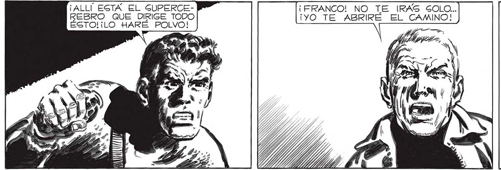
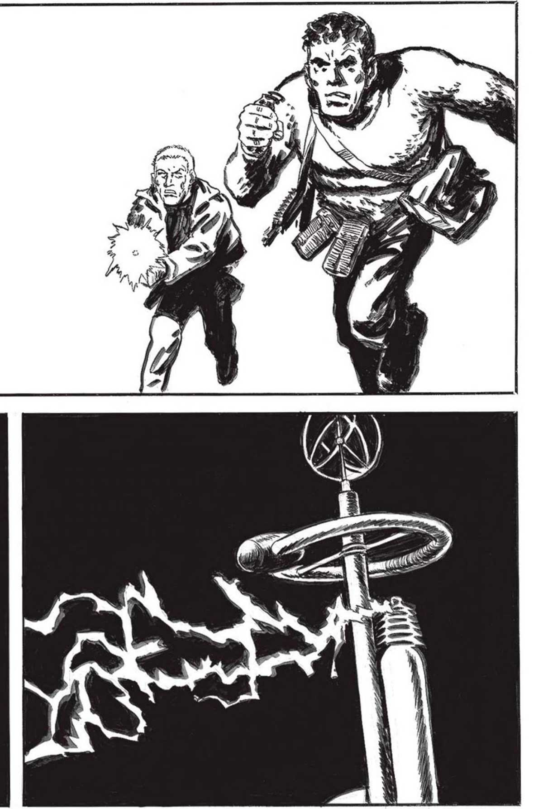
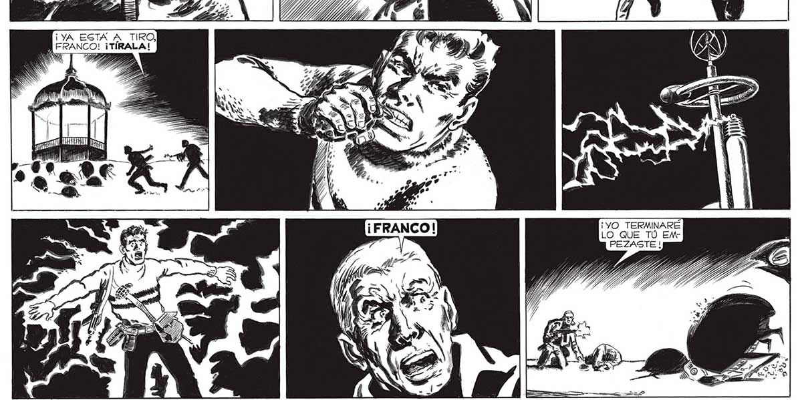

152 ¡ALLÍ EGTAÁ EL GUPERCE- ¡FRANCO! NO TE IRAS SOLO.. REBRO QUE DIRIGE TODO ¡YO TE ABRIRÉ EL CAMINO! ÉSTO! ¡iLO HARÉ POLVO! 0077 ju ¡YA ESTA A TIRO, | FRANCO! ¡TÍRALA! ma % > E Ds Y 0 > 1 113 A ¡ y “0 ¡YO TERMINARÉ LO QUE TÚ EMPEZASTE !


